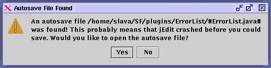

Saving Files
Any changes made to a buffer aren't actually stored to disk immediately; instead, they are stored in your computer's high speed memory (RAM) until they are saved. If there are unsaved changes in a buffer, an orange orb will be displayed in buffer tab and status bar. File>Save (keyboard equivalent: Control-S) will save the current buffer to disk. File>Save As and Save a Copy As save the buffer to disk, prompting for a file name first. The difference between the two is that Save As renames the buffer to the selected path, whereas Save a Copy As doesn't (so subsequent saves will still use the old path name). File>Save All Buffers (keyboard equivalent: F4) will save all buffers.
Autosave and Backups
jEdit's autosave feature protects against computer crashes and such. Every 30 seconds, all buffers with changes are written out to their respective file names, enclosed in hash ("#") characters. (For example, program.c will be autosaved to #program.c#). When you save a buffer, its autosave file is deleted. But if jEdit crashes before you can save, the autosave file will remain, and jEdit will offer to recover the autosaved data next time the file is opened.
Figure 3-2. Dialog box shown if a file has autosaved changes

Another useful safety feature is file backups. When you save a buffer for the first time after opening it, its original contents are saved to the buffer's file name suffixed with a tilde ("~"). For example, paper.tex is backed up to paper.tex~. The point of backups so that if you make extensive changes to a file, and then change your mind, you can go back to the previous version.
Tip: The autosave frequency and various backup-related settings can be changed in the Loading and Saving pane of the Utilities>Global Options dialog box.
Line Separator Characters
The three major operating systems use different conventions to mark line endings in text files. The MacOS uses Carriage-Return (\r, ^M) for that purpose. Unix uses Newline (\n, ^J). DOS and Windows use Carriage-Return-Newline (\r\n, ^M^J). jEdit can read and write all three formats. The line separator of the current buffer can be changed in the Utilities>Buffer Options dialog box. The default for new files can be changed in the Editing pane of the Utilities>Global Options dialog box.
When Another Application Modifies the File
jEdit will issue a warning message if it notices that another application has changed an open buffer on disk. You will be given the choice to continue editing (and lose changes made by the other application) or to reload the buffer. If you prefer, this feature can be disabled in the General pane of the Utilities>Global Options dialog box.
File>Reload (keyboard equivalent: F2) can be used to reload a buffer from disk at any other time. If the buffer has unsaved changes, you will be asked for confirmation first. File>Reload All Buffers (keyboard equivalent: Shift-F2) will discard changes in all open buffers and reload them from disk, asking for confirmation for first.. It is useful after performing a CVS checkin or similar; CVS inserts version info in all files it commits, hence they must be re-read from disk to be up-to-date.
Figure 3-3. Warning message displayed when another application changed the file on disk